- 객체탐지 = 사진 속 물체가 무엇인지 + 어디(박스)에 있는지 찾는 것.
- 맞았는지는 IoU(박스 겹침 비율)로 채점하고, 그걸 모아 mAP 점수를 만든다.
- YOLO는
train → val → predict → track네 명령으로 학습부터 영상 추적까지 한다.
이론 ↔ 명령어 한눈에
| 이론 | 대응 명령어 |
|---|---|
| 📦 필요한 패키지 | pip install ultralytics lap opencv-python |
| ① 박스 좌표 | cv2.rectangle(), cv2.putText() |
| ② IoU · 평가 지표 | model.val() → metrics.box.map50 |
| ③ YOLO 모델 · 학습 | YOLO(), model.train() |
| ④ confidence · NMS · 추론 | model.predict(conf=, iou=), result.boxes |
| ⑤ 추적 | model.track(persist=, tracker=) |
📦 필요한 패키지
| 패키지 (pip 이름) | 뭐 하는 애? | 코드에서 |
|---|---|---|
ultralytics | YOLO 학습·검증·추론·추적을 한 번에 | from ultralytics import YOLO |
opencv-python | 이미지·영상 읽기/쓰기, 박스 그리기 | import cv2 |
lap | 추적할 때 프레임 사이 박스 짝짓기 계산 | 직접 import 안 함 (track()이 내부에서 씀) |
PyYAML | dataset.yaml 읽고 쓰기 | import yaml |
numpy, pandas | 좌표 배열 계산, 결과를 표(CSV)로 저장 | import numpy as np, import pandas as pd |
torch, torchvision | YOLO가 내부에서 쓰는 딥러닝 엔진 + 박스 계산 도구(box_convert, box_iou) (Day9부터 설치됨) | import torch, from torchvision.ops import box_iou |
🔧 설치 · 확인
python -m pip install ultralytics lap opencv-python PyYAML pandas
python -c "import ultralytics, cv2, torch; print(ultralytics.__version__, cv2.__version__, torch.__version__)"
python -c "import torch; print(torch.cuda.is_available())" # True면 GPU 사용 가능torch는 다시 깔지 말 것. 이미 맞춰 둔 CUDA 버전이 꼬일 수 있어요. 수업 기준 버전은 requirements.txt(ultralytics 8.4.21, lap 0.5.12)를 따르세요.opencv-python → cv2, PyYAML → yaml, scikit-learn → sklearn, Pillow → PIL.이거 어디에 써?
Day14까지는 "이 사진은 고양이다"처럼 사진 전체에 이름표 하나를 붙였어요(분류). 객체탐지는 "고양이는 여기, 강아지는 저기"처럼 물체마다 위치까지 찾아요.
| 작업 | 출력 | 한마디로 |
|---|---|---|
| 분류 | 사진 전체의 클래스 1개 | "뭐야?" |
| 탐지 | 물체마다 클래스 + 박스 + 점수 | "뭐가 어디 있어?" |
| 분할 | 픽셀 단위 마스크 | "정확히 어느 픽셀까지야?" |
| 추적 | 탐지 + 프레임 간 같은 ID | "아까 걔가 지금 어디 갔어?" |
① 박스 좌표 — 같은 박스, 세 가지 표현
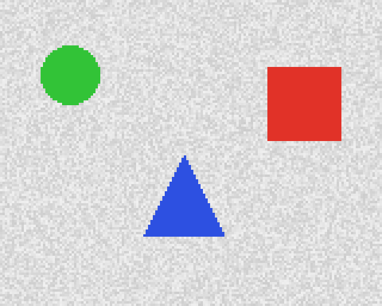
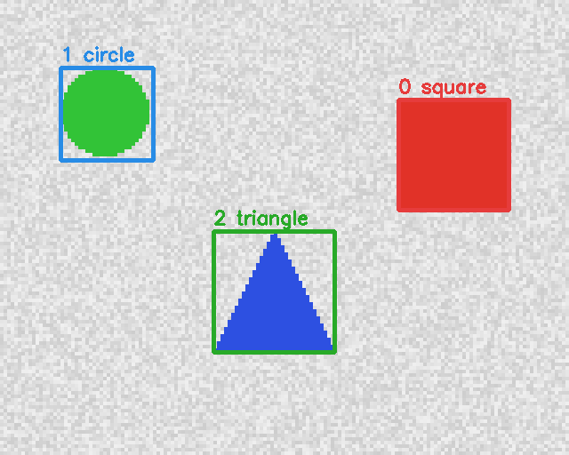
| 표현 | 숫자 4개 | 어디서 쓰나 |
|---|---|---|
| xyxy | 왼쪽위 (x1,y1), 오른쪽아래 (x2,y2) | 그리기, IoU 계산, boxes.xyxy |
| xywh (중심) | 중심 (cx,cy), 너비 w, 높이 h | boxes.xywh |
| 정규화 | 위 값을 사진 폭·높이로 나눈 0~1 | YOLO 라벨 txt, boxes.xywhn |
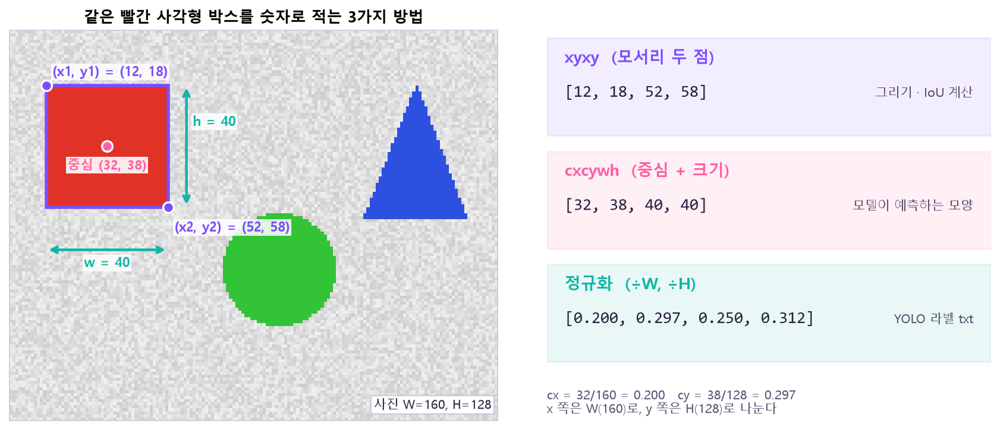
YOLO 라벨 txt는 물체 하나당 한 줄: 클래스 cx cy w h (전부 0~1)
0 0.796875 0.339844 0.193750 0.242188 ← 0번 클래스(square)
1 0.187500 0.250000 0.162500 0.203125 ← 1번 클래스(circle)
2 0.481250 0.640625 0.212500 0.265625 ← 2번 클래스(triangle)변환 공식 (W·H = 사진의 폭·높이)
cx = (x1 + x2) / 2 / W w = (x2 - x1) / W
cy = (y1 + y2) / 2 / H h = (y2 - y1) / Himgsz에 맞게 늘었다 줄었다 해요. 픽셀 값으로 적어 두면 크기가 바뀔 때마다 라벨을 다시 계산해야 하지만, 비율(0~1)로 적으면 몇 px이 되든 그대로 써요. 대신 픽셀로 되돌릴 땐 꼭 그 사진의 W·H를 곱해야 해요.🔧 명령어: 박스 그리기
img = cv2.imread("scene.jpg")
cv2.rectangle(img, (x1, y1), (x2, y2), color=(255, 0, 0), thickness=2)
cv2.putText(img, "dog 0.87", (x1, y1 - 8), cv2.FONT_HERSHEY_SIMPLEX, 0.6, (255, 0, 0), 2)
cv2.imwrite("detected.jpg", img)| 인자 | 뜻 |
|---|---|
(x1, y1), (x2, y2) | xyxy 좌표 (정수 픽셀) |
color | BGR 순서! (255,0,0)은 빨강이 아니라 파랑 |
thickness | 선 두께 (생략하면 1) |
🔧 명령어: 박스 형식 바꾸기 box_convert
import torch
from torchvision.ops import box_convert
boxes = torch.tensor([[12, 18, 52, 58]], dtype=torch.float32) # x1, y1, x2, y2
cxcywh = box_convert(boxes, in_fmt="xyxy", out_fmt="cxcywh")
labels = cxcywh / torch.tensor([160, 128, 160, 128]) # x는 W, y는 H로| 인자 | 뜻 |
|---|---|
in_fmt / out_fmt | "xyxy", "xywh"(왼쪽위+크기), "cxcywh"(중심+크기) 중에서 |
② IoU와 평가 지표
IoU = 겹친 넓이 ÷ 두 박스를 합친 넓이. 0이면 안 겹침, 1이면 완전히 같음. 파란 박스를 끌어 보세요(오른쪽 아래 모서리는 크기 조절).
합친 넓이 = 박스A 넓이 + 박스B 넓이 - 겹친 넓이 ← 겹친 부분을 두 번 세지 않게
IoU = 겹친 넓이 / 합친 넓이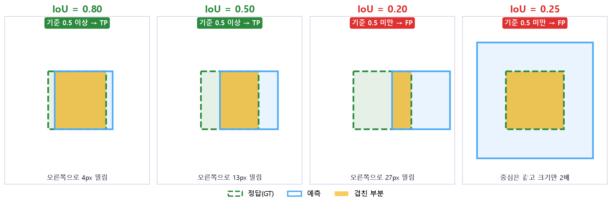
🔧 명령어: IoU 계산 box_iou
from torchvision.ops import box_iou
iou = box_iou(pred_boxes, gt_boxes) # [예측 수, 정답 수] 겹침 표 (xyxy 형식)
matched = iou >= 0.5 # 같은 클래스 + 0.5 이상 → TP 후보TP · FP · FN
| 뜻 | 예 | |
|---|---|---|
| TP 맞춤 | 같은 클래스 정답과 IoU 기준 이상으로 1:1 짝지어진 예측 | 사람을 사람으로, 위치도 맞게 |
| FP 헛탐지 | 짝이 없는 예측 (없는 걸 찾음, 클래스 틀림, 중복 박스) | 나뭇가지를 사람으로 |
| FN 놓침 | 아무 예측과도 짝지어지지 않은 정답 | 작은 사람을 못 찾음 |
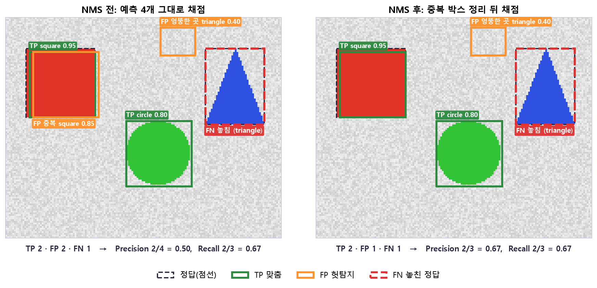
Precision · Recall · mAP
| 지표 | 공식 | 질문 |
|---|---|---|
| Precision | TP / (TP+FP) | 찾은 것 중 몇 %가 진짜? |
| Recall | TP / (TP+FN) | 진짜 중 몇 %를 찾았나? |
| AP | 한 클래스의 Precision–Recall 곡선 아래 넓이 | 그 클래스를 전반적으로 잘 찾나? |
| mAP50 | IoU 기준 0.5로 잰 AP를 클래스별로 평균 | 대충이라도 찾나? |
| mAP50-95 | IoU 기준 0.50, 0.55 … 0.95 (10개)로 잰 평균 | 박스 위치까지 정확한가? |
예: TP 8, FP 2, FN 4 → Precision = 8/10 = 0.80, Recall = 8/12 = 0.67
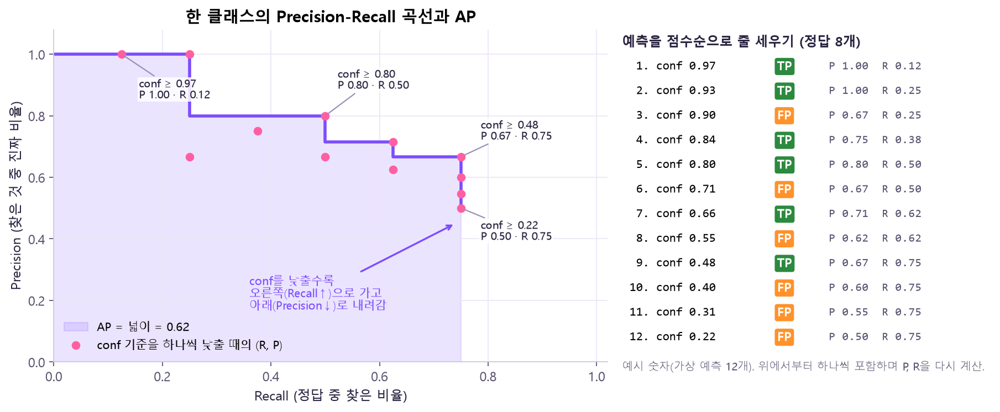
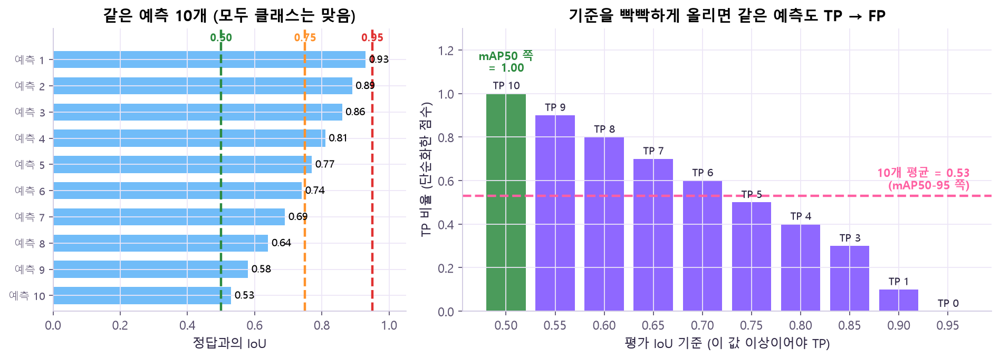
지표로 문제 진단하기
| 이렇게 나오면 | 의심할 것 |
|---|---|
| P 높고 R 낮음 | 놓치는 게 많음 → 작은 물체, 라벨 누락, conf가 너무 높음 |
| R 높고 P 낮음 | 헛탐지가 많음 → 배경만 있는 사진 부족, conf가 너무 낮음 |
| mAP50 ≫ mAP50-95 | 찾긴 하는데 박스 위치가 부정확 |
| train은 좋아지는데 val은 정체 | 과적합 |
🔧 명령어: 검증 model.val()
model = YOLO("runs/detect/train/weights/best.pt")
metrics = model.val(data="dataset.yaml", split="val", imgsz=640, conf=0.001, iou=0.7)
print(metrics.box.map50) # mAP50
print(metrics.box.map) # mAP50-95| 인자 / 결과 | 뜻 |
|---|---|
data | 데이터 안내서(yaml) 경로 |
split | 어느 데이터로 채점할지 ("val" / "test") |
conf=0.001 | 검증 땐 점수 낮은 후보까지 거의 다 남김 → 왜? PR 곡선을 끝까지(Recall이 높은 쪽까지) 그려야 AP를 제대로 잴 수 있어서 |
iou | 여기서도 NMS 기준이에요. mAP50의 "50"(평가 IoU)과는 다른 값 |
metrics.box.map50 / .map | mAP50 / mAP50-95 |
metrics.box.mp / .mr | 평균 Precision / 평균 Recall |
③ YOLO 모델과 학습
YOLO(You Only Look Once)는 사진을 한 번 통과시켜 모든 위치·크기의 물체 후보를 동시에 예측해요. 그래서 빠르고, 영상에 많이 써요.
구체적으로는 사진을 격자(칸)로 나누고 칸마다 박스 숫자 4개 + 클래스별 점수를 내요. 160×128 사진이면 이렇게 돼요:
| 격자 | 한 칸 크기 | 후보 수 | 맡는 물체 |
|---|---|---|---|
| 20 × 16 | 8px | 320개 | 작은 물체 |
| 10 × 8 | 16px | 80개 | 중간 물체 |
| 5 × 4 | 32px | 20개 | 큰 물체 |
| 합계 | 420개 | 물체가 3개여도 후보는 420개! | |
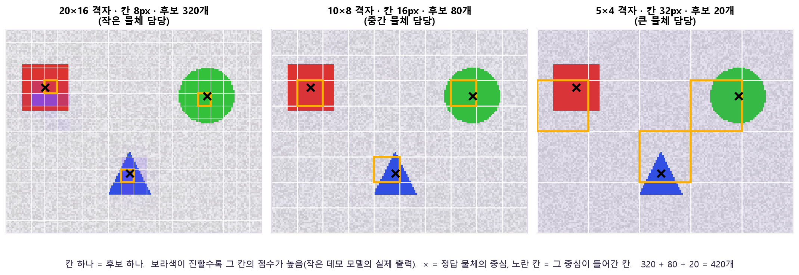
특징 뽑기→ Neck
큰·작은 크기 정보 합치기→ Head
클래스·박스·점수 예측→ 후보 정리
conf·NMS
yolo26n.yaml | yolo26n.pt | |
|---|---|---|
| 들어 있는 것 | 모델 설계도만 | 설계도 + 학습된 가중치 |
| 비유 | 빈 뇌 | 이미 공부한 뇌 |
| 언제 | 처음부터 학습 | 보통 이걸로 시작 (전이학습) |
.yaml(빈 뇌)은 선·모서리 같은 기초부터 배워야 해서 데이터도 많고 시간도 오래 걸려요. .pt는 이미 수많은 사진으로 기초를 익힌 상태라, 내 데이터로는 "내 물체" 구분만 더 배우면 돼요. Day14 전이학습과 같은 원리예요.학습 데이터 폴더 구조와 안내서(dataset.yaml):
dataset/
├─ images/train, images/val ← 사진
└─ labels/train, labels/val ← 사진과 같은 이름의 txt
# dataset.yaml
path: C:/ai_course/dataset
train: images/train
val: images/val
names:
0: helmet
1: no_helmet
2: person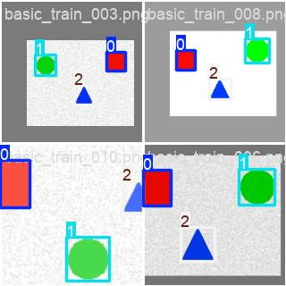
🔧 명령어: 모델 만들기 YOLO() · 학습 model.train()
from ultralytics import YOLO
if __name__ == "__main__": # Windows: 보조 프로세스가 이 파일을 다시 실행해도 학습이 또 시작되지 않게
model = YOLO("yolo26n.pt") # 학습된 뇌 불러오기 (.yaml이면 빈 뇌)
model.train(data="dataset.yaml", epochs=30, imgsz=640,
batch=16, device=0, workers=0)| 인자 | 뜻 | 바꾸면? |
|---|---|---|
data (필수) | dataset.yaml 경로 | 모델이 사진·라벨·클래스 이름을 여기서 찾아요 |
epochs | 데이터 전체를 몇 바퀴 볼지 | 적으면 덜 배움. 많으면 train 사진을 외워서 val 점수가 멈추거나 떨어짐(과적합) |
imgsz | 사진을 몇 px로 맞춰 넣을지 | 크면 작은 물체가 픽셀 몇 개로 뭉개지지 않아 잘 보임. 대신 계산량이 크기²에 비례해 느려지고 메모리↑ |
batch | 한 번에 넣는 사진 수 | 크면 한 번에 더 많이 봐서 학습이 안정적이지만 GPU 메모리를 더 씀 (부족하면 줄이기) |
device | 0 = GPU, "cpu" = CPU | GPU는 행렬 계산을 동시에 많이 해서 훨씬 빠름 |
workers | 데이터 읽는 보조 프로세스 수 | 많으면 사진 읽기가 빨라짐. Windows에선 보조 프로세스가 파일을 다시 실행하며 오류가 날 수 있어 0 추천 |
seed | 무작위 순서 고정 | 같은 seed면 다시 돌려도 결과가 비슷 → 비교 실험할 때 필요 |
학습이 끝나면 생기는 것 (runs/detect/train/)
weights/best.pt | 검증 점수가 가장 좋았던 epoch의 모델 → 보통 이걸 씀 (마지막 epoch가 꼭 제일 좋은 건 아니라서) |
weights/last.pt | 마지막 epoch의 모델 → 학습 이어하기(resume)용 |
results.csv / results.png | epoch별 loss·mAP 기록과 그래프 |
confusion_matrix.png | 어떤 클래스를 어떤 클래스로 헷갈렸나 |
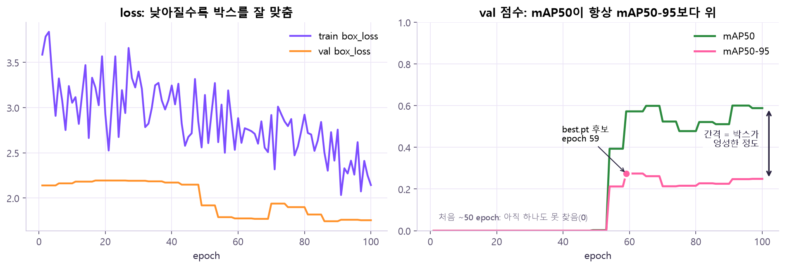
results.csv를 직접 그린 예예요(합성 도형으로 100 epoch 학습한 작은 데모 모델 — 수업 결과가 아니에요). 왼쪽은 loss가 들쭉날쭉하면서도 전체적으로 내려가고, 오른쪽은 한동안 0이다가 50 epoch쯤부터 점수가 생겨요. 초록(mAP50)은 늘 분홍(mAP50-95)보다 위에 있고, 그 간격이 박스가 엉성한 정도예요. 분홍 점은 mAP50-95가 가장 높았던 epoch예요. 🤔 왜? 마지막 epoch가 꼭 최고가 아니기 때문에 이렇게 val 점수를 매 epoch 기록해 두고 가장 좋았던 순간을 best.pt로 저장해요(ultralytics 8.4는 val mAP50-95가 가장 높은 epoch를 고르니, 분홍 점이 바로 그 순간이에요).④ confidence · NMS · 추론
모델은 처음에 후보 박스를 아주 많이 뱉어요. 이걸 두 단계로 걸러요.
점수 낮은 것 버림→ NMS
겹치는 중복 박스 정리→ 최종 결과
실제 예 (사진 1장, 정답 3개): 후보 420개 → conf 0.25로 거르면 11개 → NMS(iou 0.7)로 중복 지우면 4개 → 정답과 채점하니 TP 3 · FP 1 (남은 중복 박스 하나가 FP).
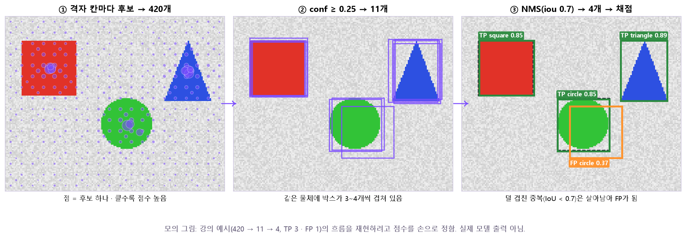
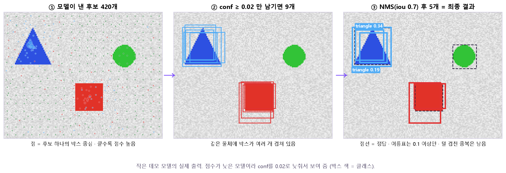
NMS 순서: 점수 제일 높은 박스를 남김 → 그 박스와 많이 겹치는(IoU 큰) 같은 클래스 박스를 지움 → 남은 것 중 다음으로 높은 박스로 반복.
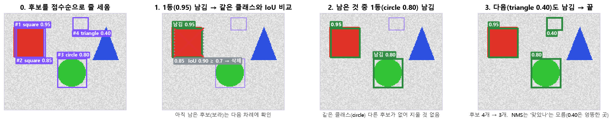
| 이름 | 무엇끼리 비교? | 어디서? |
|---|---|---|
| confidence | 후보 하나의 점수 | predict의 conf= |
| NMS IoU | 예측 ↔ 예측 | predict의 iou= |
| 평가 IoU | 예측 ↔ 정답 | mAP50의 50 |
| 낮추면 | 높이면 | |
|---|---|---|
conf | 후보 많아짐 → Recall↑, 헛탐지↑ | 확실한 것만 → Precision↑, 놓침↑ |
NMS iou | 조금만 겹쳐도 지움 → 중복↓, 붙어 있는 물체 놓칠 수 있음 | 많이 겹쳐도 남김 → 붙은 물체 분리↑, 중복 박스 남을 수 있음 |
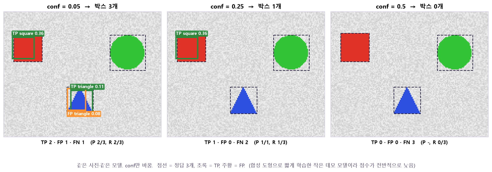
conf만 0.05 → 0.25 → 0.5로 올렸어요. 박스가 3개 → 1개 → 0개로 줄고, 아래 줄의 R(Recall)은 2/3 → 1/3 → 0/3으로 떨어지지만 FP(주황)는 사라져 P는 2/3 → 1/1로 올라요. 🤔 왜? conf는 "이 점수 미만은 안 보여 줌"이라는 커트라인이라, 올릴수록 애매한 후보(맞는 것도, 틀린 것도)가 함께 잘려 나가요. 모델은 그대로이고 어디서 자르느냐만 바뀐 거예요.🔧 명령어: 추론 model.predict()
model = YOLO("best.pt")
results = model.predict(source="samples/", conf=0.25, iou=0.7, imgsz=640, save=True)| 인자 | 뜻 |
|---|---|
source (필수) | 사진 경로, 폴더, 영상, URL, 웹캠 번호(0), OpenCV 배열 |
conf | 이 점수 미만 후보는 버림 (기본 0.25) |
iou | NMS 겹침 기준 (기본 0.7) |
save=True | 박스 그린 이미지를 저장 |
stream=True | 긴 영상은 이걸로 → 한 프레임씩 처리해 메모리 절약. 왜? False면 모든 프레임 결과를 리스트에 다 쌓아 두고 한꺼번에 돌려줘서 메모리가 터질 수 있어요 |
🔧 명령어: 결과 꺼내기 result.boxes
for result in results: # 사진 1장 = result 1개
for box, score, cls in zip(result.boxes.xyxy.cpu().numpy(),
result.boxes.conf.cpu().numpy(),
result.boxes.cls.cpu().numpy().astype(int)):
print(result.names[cls], round(float(score), 2), box)
cv2.imwrite("out.jpg", result.plot()) # 박스 그린 그림| 속성 | 내용 |
|---|---|
boxes.xyxy | 픽셀 좌표 [N, 4] |
boxes.xywhn | 정규화 중심 좌표 (라벨 형식) |
boxes.conf / boxes.cls | 점수 / 클래스 번호 |
result.names | 번호 → 이름 사전 ({0: 'helmet', ...}) |
result.plot() | 박스 그린 이미지 (BGR 배열) |
.cpu() 후에 .numpy(). 왜? numpy는 GPU 메모리를 직접 못 읽어서 먼저 CPU로 옮겨 와야 해요. 그리고 탐지가 없으면 boxes 길이가 0이니 에러가 아니라 정상.⑤ 추적 (Tracking)
탐지는 프레임마다 따로 "사람 2명"이라고만 말해요. 추적은 프레임 사이를 연결해서 "7번 사람이 오른쪽으로 이동 중"처럼 같은 물체에 같은 Track ID를 붙여요. 이게 있어야 사람 수 세기, 이동 경로, 머문 시간 같은 걸 할 수 있어요.
| Detect | Track | |
|---|---|---|
| 출력 | box · class · conf | + track_id |
| 이전 프레임 기억 | ❌ | ✅ |
| 대표 실패 | 놓침, 헛탐지 | ID switch (가려졌다 나오면 번호가 바뀜) |
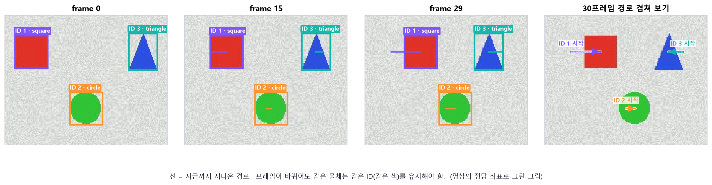
🔧 명령어: 추적 model.track()
model = YOLO("best.pt")
for result in model.track(source="traffic.mp4", persist=True,
tracker="botsort.yaml", stream=True):
if result.boxes.id is not None:
print(result.boxes.id.int().tolist()) # 프레임별 Track ID| 인자 | 뜻 |
|---|---|
source | 영상, 카메라, 연속 프레임 |
persist=True | 이전 프레임 기억을 이어감 (같은 영상 안에서만!). 왜? 이 기억이 있어야 "아까 7번"과 지금 박스를 이을 수 있어요. 다른 영상에 이어 쓰면 엉뚱한 영상의 기억이 섞여요 |
tracker | "botsort.yaml"(기본) 또는 "bytetrack.yaml" |
result.boxes.id | Track ID (없으면 None) |
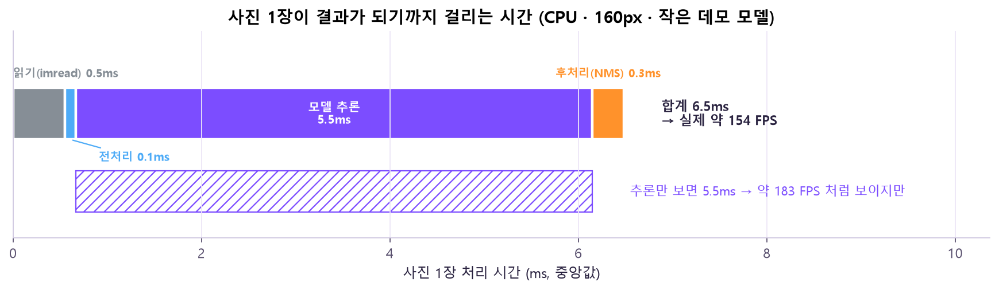
result.speed의 preprocess · inference · postprocess + 직접 잰 imread, 여러 장의 중앙값). 위 막대가 실제 전체, 아래 빗금 막대는 "모델 추론"만 잘라 본 것 — 같은 실행인데 FPS 숫자가 달라져요. 🤔 왜? 한 장이 결과가 되려면 읽기 → 전처리 → 추론 → 후처리를 모두 거쳐야 하니까 시간은 더해져요. 여기선 추론이 대부분이라 차이가 작지만, 큰 사진·영상 디코딩·추적·저장이 붙으면 추론 밖의 시간이 훨씬 커져요. 그래서 FPS를 말할 땐 "어디부터 어디까지 쟀는지"를 같이 적어요(숫자는 이 PC 기준이라 장비마다 달라요).🔧 같은 걸 터미널(CLI)로
yolo detect train model=yolo26n.pt data=dataset.yaml epochs=30 imgsz=640
yolo detect val model=best.pt data=dataset.yaml
yolo detect predict model=best.pt source=samples/ conf=0.25
yolo detect track model=best.pt source=traffic.mp4epochs=30 형식. --epochs 30 아님!원본 자료
- 강의:
Day15_20261106.pdf· 요약:Day15_oneday요약.pdf - 공식 문서: Ultralytics Modes (train · val · predict · track)